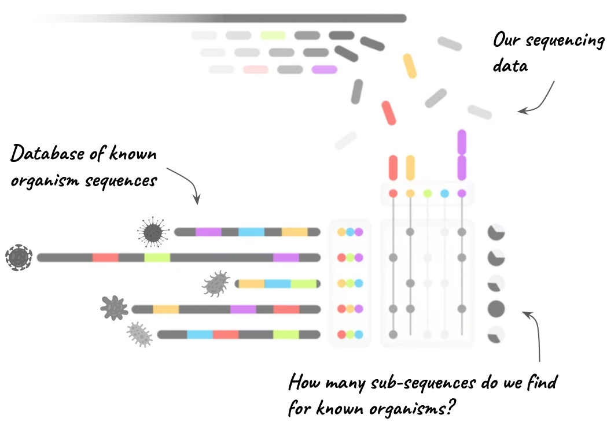

7 Assessing read content
After this section you should be able to:
- Describe why assessing the species content of your reads is a useful first step in the analysis.
- Explain how the read content is assessed, in particular by the software Mash.
- Apply the Mash software to identify the species content of your sequencing reads.
- Discuss the results of the content screening and when they might indicate a contamination or unexpected organism is present in the samples.
7.1 Read content
As detailed in the previous section, our example data was obtained from Vibrio cholerae colonies from plate cultures. Therefore, we expect our sequencing reads to contain only V. cholerae sequences and nothing else. If we had used a metagenomic approach, we would have expected other organisms to also be contained in our reads.
Therefore, before attempting to assemble genomes from our samples, it is a good idea to screen which species can be detected in our sequencing reads. For plate-based samples like ours, this is a good quality check for our samples, as we can confirm that they contain V. cholerae only and are not contaminated with other organisms. For metagenomic samples, where we expect a mixture of organisms (including Human), we can get an idea of whether V. cholerae is present in the sample and at what fraction.
Generally speaking, assessing read content can be done by comparing our sequencing reads against a database of sequences from known organisms. Two popular software options for this task are:
- Kraken2, which categorises each sequencing read to the highest possible taxonomic level. Kraken2 is commonly used in metagenomic analysis, especially when combined with Braken, which allows estimating species abundance in a mixed sample. However, it can be computationally intensive.
- Mash is a faster alternative for assessing species content in reads. It doesn’t assign a taxonomy to individual reads but reports the sample’s content based on matches with its database sequences. The drawback is that it doesn’t provide precise species abundance estimation.
For our case study, which uses cultured samples, we choose to use Mash for its speed.
7.2 Mash
To screen our reads for known bacterial species we will use the software Mash, which implements an algorithm for fast screening raw sequencing reads against a database. The Mash software, primarily designed for metagenomic samples with multiple species, can also be applied to culture-based samples to confirm the presence of the expected organism and detect potential contaminants. Mash is known for its speed in assessing the species content of sequencing reads without requiring genome assembly.

To run Mash, a pre-built database file is needed, readily available online from the developers. This database is constructed from bacterial organisms found in public databases like NCBI’s RefSeq. For efficiency, the developers break down each reference sequence into smaller sub-sequences, as shown in Figure 7.1. Occasionally, different organisms may share similar sub-sequences, but Mash can differentiate them by examining other sub-sequences. When your reads are matched against these sub-sequences, Mash counts the hits for each species. The species with the most matches in the database is likely the main species in your sample. If you have multiple organisms, as in a metagenomic sample, different species may show a high fraction of matched sub-sequences.
7.2.1 Mash database
Before screening our reads, we must first download the most up-to-date database used by Mash. There are several pre-compiled databases available from the Mash website. We will use one that includes both bacterial genomes and plasmids (see example tutorial).
If you are attending our workshop, we have already downloaded these files for you, but here are the commands we used to achieve this:
# create subdirectory for mash database
mkdir -p resources/mash_db
# download the database file
wget -O resources/mash_db/refseq.genomes_and_plasmids.k21s1000.msh --no-check-certificate https://gembox.cbcb.umd.edu/mash/refseq.genomes%2Bplasmid.k21s1000.mshAs you can see, because this is a public resource, we saved it in our resources folder.
7.2.2 Mash screen
The main step of our analysis can be run using the mash screen command. This command takes the Mash database and checks how well its sequences are contained in our reads, for each organism. If our sequencing reads cover the entire genome of V. cholerae, then we expect both a high sequence identity and a high percentage of shared sequences with that organism.
To start our analysis, we first create a folder for our output:
mkdir results/mashTo run the analysis on a single sample, we can run the following command:
mash screen -w -p 8 resources/mash_db/refseq.genomes_and_plasmids.k21s1000.msh data/fastq_pass/barcode25/*.fastq.gz | sort -n -r > results/mash/barcode25_screen.tsvThere are several things to note about this command:
- We use the option
-w, which according to the help (mash screen -h) refers to the “winner-take-all strategy”, which removes much of the redundancy in the results to make interpretation of the results easier. - We use the
-poption to use more CPU cores, to speed the computation by running the analysis in parallel. - We use the
*wildcard to match all the FASTQ files within thefastq_pass/barcode25data folder (ONT often outputs multiple FASTQ files per barcode). - We pipe the output of mash to the
sortcommand to order the results in descending order of sequence identity against the Mash database. This will make sure that we get the hits with the highest identity at the top of the file. - The output from Mash is a tab-delimited file, so we save our output with
.tsvextension to indicate this.
We can either open this file in a spreadsheet program (such as Excel), or use the program less to open it directly in the terminal:
less -S results/mash/barcode25_screen.tsv0.99957 991/1000 46 0 GCF_001187225.1_ASM118722v1_genomic.fna.gz [97 seqs] NZ_LGNX01000001.1 Vibrio cholerae O1 strain NHCC-079 Contig1, whole genome shotgun sequence [...]
0.999377 987/1000 36 0 GCF_000893195.1_ViralProj63437_genomic.fna.gz NC_015209.1 Vibrio phage CTX chromosome I, complete genome
0.994519 891/1000 63 0 ref|NC_004982.1| Vibrio cholerae strain O395P plasmid pTLC, complete sequence
0.993445 871/1000 90 0 ref|NC_008613.1| Photobacterium damselae subsp. piscicida plasmid pP91278, complete sequence
0.967069 495/1000 74 0 ref|NZ_CP013143.1| Alcaligenes faecalis strain ZD02 plasmid pZD02, complete sequence
0.962791 451/1000 83 0 ref|NZ_CP007487.1| Salmonella enterica subsp. enterica strain SA972816 plasmid p972816 sequence
0.959749 422/1000 96 0 ref|NZ_CP007486.1| Salmonella enterica subsp. enterica strain SA972816 plasmid p972816 sequence
0.952766 362/1000 96 0 ref|NZ_CP007485.1| Salmonella enterica subsp. enterica strain SA972816 plasmid p972816 sequence
0.952135 357/1000 99 0 ref|NC_011511.1| Klebsiella pneumoniae plasmid p169, complete sequence
0.95188 355/1000 32 0 ref|NC_017172.1| Acinetobacter baumannii MDR-ZJ06 plasmid pMDR-ZJ06, complete sequenceThe output file contains one row for each organism (or plasmid) from the Mash database that was found in our sequencing reads. The columns in the output file are in the following order:
- identity - the percentage of sequence similarity between the database and our reads.
- shared-hashes - a score referring to how many sequences in the database for that organism were matched to our reads.
- median-multiplicity - the average number of times each database sequence is found in our reads (this is a very rough proxy for genome coverage).
- p-value - a statistical measure of the significance of the distance between the sequences in the database and our own sequencing reads. Low values (close to zero) indicate that it would be very unlikely to observe such similarity by chance alone.
- query-id - the name of the sequence in the Mash database that was used to report these matches.
- query-comment - the description of the query sequence.
From the results above, we can see that our reads appear to be clearly related to V. cholerae. The second hit is “Vibrio phage CTX”, which refers to the phage encoding the cholera toxin, CTXφ.
This analysis initially answers two critical questions with regards to cholera genomic surveillance, which are:
- Is this V.cholerae? Yes, it appears that our samples contain V. cholerae sequences.
- Is this a pathogenic strain? Yes, it appears that our samples belong to a pathogenic serogroup, because they contain the CTXφ prophage.
The second question will be confirmed during downstream analyses.
7.3 Screening multiple samples
In the above analysis, we only screened one sample. To analyse the other samples we could re-run the command, replacing the barcode number each time. However, if we have dozens of samples, this can become very tedious and prone to error, as it requires a lot of copy/paste. Therefore, we could automate the analysis for each barcode by using a for loop, which is demonstrated in the code below.
#!/bin/bash
# create output directory
mkdir results/mash/
# loop through each barcode
for filepath in data/fastq_pass/*
do
# get the barcode name
barcode=$(basename $filepath)
# print a message
echo "Processing ${barcode}"
# run mash command
mash screen -w -p 8 resources/mash_db/refseq.genomes_and_plasmids.k21s1000.msh ${filepath}/*.fastq.gz | sort -n -r > results/mash/${barcode}_screen_sorted.tsv
doneThe result in this case will be individual TSV files for each barcode, which we could open individually to see what the top hits for each of them were. You could also use the head command to look at the top few lines of each file in one go, as exemplified here:
# look at the top 3 lines of every screen file
head -n 3 results/mash/barcode*.tsv==> results/mash/barcode25_screen_sorted.tsv <==
0.999473 989/1000 12 0 GCF_000893195.1_ViralProj63437_genomic.fna.gz NC_015209.1 Vibrio phage CTX chromosome I, complete genome
0.999135 982/1000 11 0 GCF_000348385.2_ASM34838v2_genomic.fna.gz [86 seqs] NZ_KB662481.1 Vibrio cholerae O1 str. NHCC-004A genomic scaffold vcoNHCC004A.contig.0, whole genome shotgun sequence [...]
0.994092 883/1000 13 0 ref|NC_004982.1| Vibrio cholerae strain O395P plasmid pTLC, complete sequence
==> results/mash/barcode26_screen_sorted.tsv <==
0.99957 991/1000 46 0 GCF_001187225.1_ASM118722v1_genomic.fna.gz [97 seqs] NZ_LGNX01000001.1 Vibrio cholerae O1 strain NHCC-079 Contig1, whole genome shotgun sequence [...]
0.999377 987/1000 36 0 GCF_000893195.1_ViralProj63437_genomic.fna.gz NC_015209.1 Vibrio phage CTX chromosome I, complete genome
0.994519 891/1000 63 0 ref|NC_004982.1| Vibrio cholerae strain O395P plasmid pTLC, complete sequence
==> results/mash/barcode27_screen_sorted.tsv <==
0.999522 990/1000 44 0 GCF_000348385.2_ASM34838v2_genomic.fna.gz [86 seqs] NZ_KB662481.1 Vibrio cholerae O1 str. NHCC-004A genomic scaffold vcoNHCC004A.contig.0, whole genome shotgun sequence [...]
0.999377 987/1000 36 0 GCF_000893195.1_ViralProj63437_genomic.fna.gz NC_015209.1 Vibrio phage CTX chromosome I, complete genome
0.995206 904/1000 68 0 ref|NC_004982.1| Vibrio cholerae strain O395P plasmid pTLC, complete sequence
... some output ommitted to save space ...We can see that the results for individual barcodes (here we show 3 barcodes as an example) are similar to each other, which we expect as all these samples come from the same outbreak event and so should be related to each other.
7.4 Exercises
For these exercises, you can either use the dataset we provide in Data & Setup, or your own data.
7.5 Summary
- Assessing species content helps confirm the identity of the organisms present in your sequencing data.
- For cultured samples it ensures that your data matches your expected species and helps detect contamination early in the analysis.
- Mash is a tool that matches your reads against known genome sequences (stored in a database), allowing you to identify the closest known species to your sequencing reads.
- The Mash analysis requires two steps:
- Downloading a suitable database for the organisms of interest (e.g. prokaryotes, eukaryotes, fungi). This only needs to be done once, or if the database is updated.
- Performing the screening step, using the command
mash screen.
- Results may indicate contamination if there are species present that shouldn’t be in your dataset, such as lab contaminants or environmental microbes.
- Proper interpretation of results involves considering both the sequence identity and number of hits against the database.
- Early screening is sometimes enough to assess that you are dealing with pathogenic strains of the microbe. For example, the presence of the CTX phage, common in O1 El Tor strains of Vibrio cholerae.